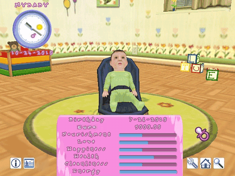

12 |
Datos del juego |
 |
|
La pantalla de información del juego contiene los detalles sobre tu bebé y cualquier otra cosa que quieras saber.

Reloj en pantalla
Menú de información
Birthday (Cumpleaños) ¡El día en que nació tu bebé!
La cantidad de dinero que tienes
¿Tu bebé está hambriento? Esta barra muestra el apetito de tu bebé. ¡Cuando esté vacía, será la hora de darle de comer!
Love (Amor) Si esta barra no está llena, significa que tu bebé necesita tu amor y deberías prestarle más atención y darle más afecto. Tu bebé responde a los mimos y caricias, que le hacen sentirse querido. Es muy importante que esta barra esté siempre llena.
Happiness (Felicidad) ¿Juega bastante tu bebé? ¿Juegas tú también con él? Este indicador muestra lo feliz que es tu bebé. ¡Para que siga feliz, asegúrate de que tenga juguetes y de que se ría! ¡Apunta sobre tu bebé con el Wii Remote y oprime el Botón A para hacerle cosquillas y que se ría!
Health (Salud) Este indicador es muy importante. Si su valor es bajo, tu bebé enfermará y la niñera tendrá que llamar al doctor.
Cleanliness (Limpieza) Durante el día y la noche tu bebé se ensuciará y necesitará cambiarse. ¡Si este indicador está bajo, es hora de cambiar el pañal o de bañar a tu bebé!
Energy (Energía) A lo largo del día, tu bebé se fatigará debido a actividades como jugar, aprender a gatear, mantener el equilibrio, andar, etc... ¡Acunando a tu bebé para que eche la siesta de día o duerma de noche, este recuperará su energía. |
 |
 |
 |